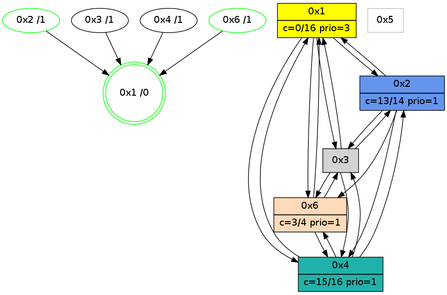

>> << IDX [start] -100 -25 -5 +0 +5 +25 [1195.24178815]
 Previous packets
----------------------------------------------------------------------
1190.219263 beacon01(adaf) #0 coord=01,02,05,03,04,06 cycle=944.0ms assoc
-- color-indic=0 64 08 3b
1190.229223 beacon02(adaf) #0 coord=01,02,05,03,04,06 cycle=944.0ms assoc 64 59 c4
1190.239226 beacon05(adaf) #0 coord=01,02,05,03,04,06 cycle=944.0ms assoc 64 ff ee
1190.249225 beacon03(adaf) #0 coord=01,02,05,03,04,06 cycle=944.0ms assoc 64 63 ca
1190.259225 beacon04(adaf) #0 coord=01,02,05,03,04,06 cycle=944.0ms assoc 64 c5 e0
1190.269225 beacon06(adaf) #0 coord=01,02,05,03,04,06 cycle=944.0ms assoc 64 b1 fc
1190.281156 [Hello(4): seq=968 sym=1,3,6 sysInfo=hasWarning stat=1:12,11,11,0/3:14,0,3,0/6:6,0,3,0]
1190.284154 [STC(4)->3-.->1 #0.212 to-color d=2]
1190.286911 [Hello(1): seq=870 sym=2,4,6,3 color=0 sysInfo=hasWarning,MaxColorIndicationCalled,MaxColorResponseCalled,MaxColorRequestCalled,ColoringModeRequestCalled stat=2:1,3,5,0/4:3,0,0,0/6:3,2,10,0/3:0,0,1,0]
----------------------------------------------------------------------
1191.223769 beacon01(adaf) #0 coord=01,02,05,03,04,06 cycle=944.0ms assoc
-- color-indic=0 64 cc 54
1191.233730 beacon02(adaf) #0 coord=01,02,05,03,04,06 cycle=944.0ms assoc 64 9d ab
1191.243730 beacon05(adaf) #0 coord=01,02,05,03,04,06 cycle=944.0ms assoc 64 3b 81
1191.263729 beacon04(adaf) #0 coord=01,02,05,03,04,06 cycle=944.0ms assoc 64 01 8f
1191.273730 beacon06(adaf) #0 coord=01,02,05,03,04,06 cycle=944.0ms assoc 64 75 93
1191.285420 [Hello(6): seq=883 sym=4,3,1 color=3 sysInfo=hasWarning,MaxColorIndicationCalled,ColoringModeIndicationCalled,MaxColorResponseCalled stat=4:9,5,7,1/3:0,0,0,0/1:10,13,6,0]
1191.289161 [Hello(2): seq=1455 sym=6,1,4 asym=3 color=13 sysInfo=hasWarning,MaxColorIndicationCalled,ColoringModeIndicationCalled,MaxColorResponseCalled stat=6:8,0,3,0/1:1,7,12,0/4:5,0,1,0/3:6,0,1,0]
----------------------------------------------------------------------
1192.228272 beacon01(adaf) #0 coord=01,02,05,03,04,06 cycle=944.0ms assoc
-- color-indic=0 64 80 e4
1192.238235 beacon02(adaf) #0 coord=01,02,05,03,04,06 cycle=944.0ms assoc 64 d1 1b
1192.248233 beacon05(adaf) #0 coord=01,02,05,03,04,06 cycle=944.0ms assoc 64 77 31
1192.258233 beacon03(adaf) #0 coord=01,02,05,03,04,06 cycle=944.0ms assoc 64 eb 15
1192.268233 beacon04(adaf) #0 coord=01,02,05,03,04,06 cycle=944.0ms assoc 64 4d 3f
1192.289961 [Hello(4): seq=969 sym=2,1,3,6 sysInfo=hasWarning stat=2:0,0,0,0/1:13,11,11,0/3:14,0,3,0/6:7,0,3,0]
1192.293799 [Hello(1): seq=871 sym=2,4,6,3 color=0 sysInfo=hasWarning,MaxColorIndicationCalled,MaxColorResponseCalled,MaxColorRequestCalled,ColoringModeRequestCalled stat=2:2,3,5,0/4:3,0,0,0/6:4,2,10,0/3:0,0,1,0]
----------------------------------------------------------------------
1193.232778 beacon01(adaf) #0 coord=01,02,05,03,04,06 cycle=944.0ms assoc
-- color-indic=0 64 44 8b
1193.242741 beacon02(adaf) #0 coord=01,02,05,03,04,06 cycle=944.0ms assoc 64 15 74
1193.252740 beacon05(adaf) #0 coord=01,02,05,03,04,06 cycle=944.0ms assoc 64 b3 5e
1193.262740 beacon03(adaf) #0 coord=01,02,05,03,04,06 cycle=944.0ms assoc 64 2f 7a
1193.282742 beacon06(adaf) #0 coord=01,02,05,03,04,06 cycle=944.0ms assoc 64 fd 4c
1193.294455 [Hello(2): seq=1456 sym=3,6,1,4 color=13 sysInfo=hasWarning,MaxColorIndicationCalled,ColoringModeIndicationCalled,MaxColorResponseCalled stat=3:7,0,1,0/6:8,0,3,0/1:2,7,12,0/4:5,0,1,0]
1193.298171 [STC(1) #0.213 new-neigh,tree-change,inconsistent-stability,stable,to-color d=0]
----------------------------------------------------------------------
1194.237283 beacon01(adaf) #0 coord=01,02,05,03,04,06 cycle=944.0ms assoc
-- color-indic=0 64 1a ea
1194.247244 beacon02(adaf) #0 coord=01,02,05,03,04,06 cycle=944.0ms assoc 64 4b 15
1194.257244 beacon05(adaf) #0 coord=01,02,05,03,04,06 cycle=944.0ms assoc 64 ed 3f
1194.267243 beacon03(adaf) #0 coord=01,02,05,03,04,06 cycle=944.0ms assoc 64 71 1b
1194.277244 beacon04(adaf) #0 coord=01,02,05,03,04,06 cycle=944.0ms assoc 64 d7 31
1194.287245 beacon06(adaf) #0 coord=01,02,05,03,04,06 cycle=944.0ms assoc 64 a3 2d
1194.298807 [STC(4)->1 #0.213 to-color d=1]
1194.301708 [Hello(1): seq=872 sym=2,4,6,3 color=0 sysInfo=hasWarning,MaxColorIndicationCalled,MaxColorResponseCalled,MaxColorRequestCalled,ColoringModeRequestCalled stat=2:2,3,5,0/4:3,0,0,0/6:4,2,10,0/3:0,0,1,0]
1194.304555 [Hello(3): seq=969 sym=6,2,1,4 color=2 sysInfo=hasWarning,MaxColorIndicationCalled,ColoringModeIndicationCalled,MaxColorResponseCalled stat=6:6,0,2,0/2:0,0,0,0/1:0,15,11,1/4:8,10,3,1]
1194.307694 [STC(3)->1 #0.213 new-neigh,tree-change,inconsistent-stability,to-color d=1]